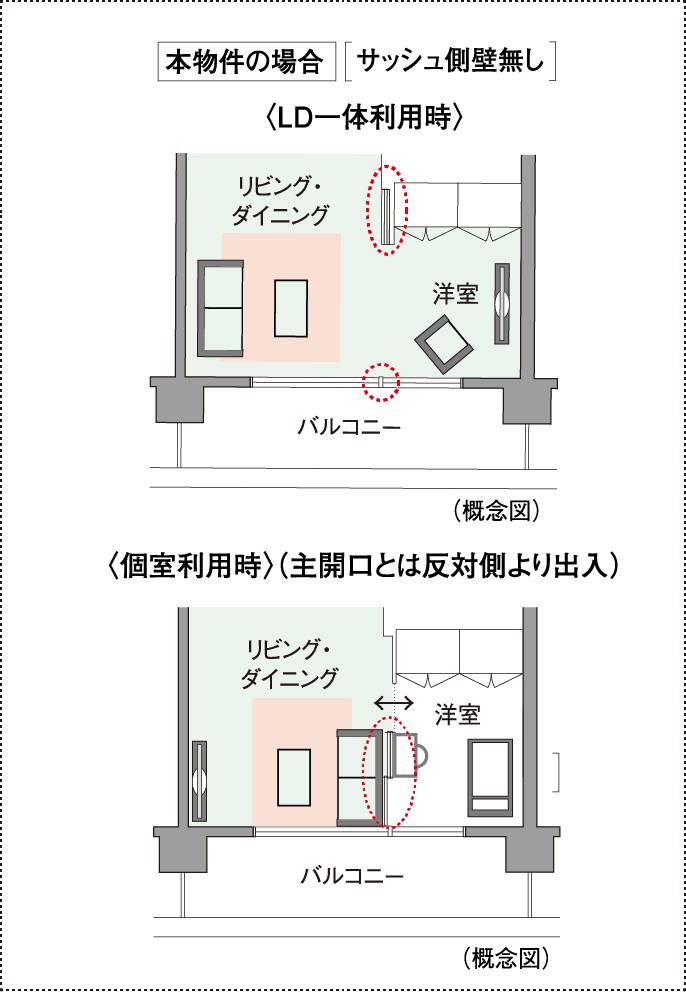

ユニバーサルデザイン
-
つまずいて転倒するなど、住戸内での思わぬ事故を防ぐために住戸内の床段差を極力なくした、フラットフロアを実現しました。
※玄関、バスルーム、バルコニー、ルーフバルコニー、テラスの出入口を除く。（参考写真１）
-
バスルームには手すり、玄関や廊下、トイレには手すり取付下地補強を施しています。高齢者の動作をサポートし、安全に配慮しています。
※手すり取付下地補強は一部分のみ。（参考写真１）
-
ドアハンドルを回す必要がなく「押す・引く」だけで開閉できる、プッシュプル式のドアハンドルを採用。小さなお子様やお年寄りの方でもスムーズに開閉することができます。
（参考写真１）
-
（参考写真１）
-
（参考写真１）
-
（参考写真１）
-
浴槽へのまたぎ高を約450㎜に抑え、出入口の段差も極力解消した、低床設計のユニットバスを採用しました。さらに、壁には手すりを設置。手すりにつかまりながら浴槽への出入りができ高齢化社会に対応した、人にやさしい仕様です。

（参考写真１）

-
主なオートロックドアには、鍵をカバンやポケットに入れたままで解錠可能な、ハンズフリーキーを採用。
※周辺通行時の意図しない解錠・誤作動防止のため、設置箇所により認証方法・検知範囲が異なります。また、検知範囲には限度があり、構造上、動線がカバーされていない箇所もあります。（概念図）
（参考写真2）
-
共用階段の要所に手すりを設けました。さらに、エントランスや共用廊下などの床段差も極力解消し、車椅子の通行しやすいスロープを多用するなど、安全に配慮しています。
-
（参考写真１）
-
（概念図）
（参考写真２）
-
車椅子などでの利用に配慮して、正面壁面の中央部は鏡貼りとしています。エレベーター内の片側低い位置に専用操作盤を設置し、乗場の操作ボタンを低い位置に下げて設置しています。
快適提案
-
リビング・ダイニングと隣接する洋室を可動式間仕切り扉で開放的な一体空間にもプライバシーの保たれた個室にも変更可能なダブルオープンフレキシブルプランを採用しました。リビング・ダイニングとの一体感を高めるため、主開口側であるサッシュ面に余計な袖壁を作らない従来の設計に加え、主開口とは反対側からも単独で開くことができる扉を採用することで洋室のプライベート性や家具レイアウトの自由度が大きくアップしました。ライフスタイルの変化にリフォームすることなく自在に対応できます。
 -
バルコニー、テラスにスロップシンクを備えました。ガーデニングやお掃除など、便利に活用できます。
（参考写真１）
-
躯体柱をリビング・ダイニング、洋室の外に出したアウトフレーム設計を採用しました。家具のレイアウトなどスペースが有効活用できます。
※室内の壁の形状は概念図上では一部省略しています。詳細は図面集をご確認ください。
※主開口部側のみ。 -
リビング・ダイニングと隣接する洋室を可動式間仕切り扉で開放的な一体空間にもプライバシーの保たれた個室にも変更可能なダブルオープンフレキシブルプランを採用しました。リビング・ダイニングとの一体感を高めるため、主開口側であるサッシュ面に余計な袖壁を作らない従来の設計に加え、主開口とは反対側からも単独で開くことができる扉を採用することで洋室のプライベート性や家具レイアウトの自由度が大きくアップしました。ライフスタイルの変化にリフォームすることなく自在に対応できます。
※1. ご利用には予め準備が必要な事項もございます。詳細につきましては取扱説明書をご確認ください。※2. 家庭用無線LANルーターは別途ご用意頂く必要がございます。※3. 機器ごとによって仕様・接続方法が異なりますので、詳細につきましては取扱説明書をご確認ください。
（イメージ図）
-
ルーフバルコニー、テラスのお掃除などにご利用いただける、防水コンセントを備えました。
※一部住戸を除く。 -
散歩で汚れたペットの足を清潔に保つペット専用の足洗い場を設けました。
メンテナンス／アフターサービス
-
実績などに基づいて部位毎に設定した標準の修繕周期をベースに、経年劣化により将来必要となるであろう、各種の修繕工事を予想した「長期修繕計画表期間は30年間」を作成します。「長期修繕計画表」は、一定の期間中に予想される修繕工事の費用総額（概算）と、それに対応した修繕積立金の額がひと目で確認できるため、管理組合での的確な資金計画立案が可能になります。工事実施時期が近づくと、管理受託者から管理組合に事前調査を提案。修繕対象の部位について詳細な調査・診断を行ない、予算面の措置も含めた修繕工事計画を作成し、管理組合に提案します。
-
お引き渡しより、通常2年のアフターサービス期間終了後、本来ご自身で対応されることとなる住まいのトラブル対応、住宅設備機器等のリペアやメンテナンス等を、お引渡しより12年間サポートします。
※詳細は係員にお尋ねください。※アフターサービス業務規準における補修項目と異なります。
詳しいサービス内容は利用規約をご覧ください。 -
住友不動産では、「お客様センター」・「アフターサービスセンター」を開設し、原則お引渡し後2年間にわたり、お客様センターにて24時間365日体制（水曜・日曜・祝日・年末年始・お盆休暇および17時40分以降は受付のみ）で、アフターサービス業務規準に基づき、お客様へのアフターサービスに対応しています。お部屋のお引渡し後、3ヵ月・1年・2年を目途に定期点検を実施し、ご指摘事項および不具合箇所の補修をします。また、漏水などの緊急事態にも、お客様センターにて受付対応をします。
［お客様センター：0120-093-155］概念図
サービス
-
駐車場内には、電気自動車・プラグインハイブリッド車の充電に対応した設備を設置し、エコカーをより身近なものとする環境を整えました。
※本設備のご利用は有料となります。詳しくは係員にお尋ねください。（イメージイラスト）
※本イラストはイメージであり、実際のものとは異なります。 -
留守中に届いた荷物を、24時間いつでも受け取ることができる他、宅配物の発送やクリーニングの依頼が行えます。宅配物発送料金・クリーニング料金はクレジットカードで決済することも可能。 また、留守中に届いた荷物は住戸内のインターホン親機で着荷表示により確認できます。
（参考写真2）
-
梱包資材の提供や荷物の搬出・運搬・搬入など、お引越しを無料でサポートします。また、必要に応じて家電の取付けやトランクルームの手配などの各種サービスもオプション（有料）で行います。
※サービスのご利用には制限がございます。詳細は係員にお尋ねください。
-
（イメージイラスト）
※本イラストはイメージであり、実際のものとは異なります。） -
（参考写真2）
-
-
ご入居された皆様の「安心」「快適」「便利」をお手伝いさせていただくため、様々なサービスをご用意しました。
※本サービスは有料となります。
※ご利用エリアにより、サービス内容が制限される場合があります。また、サービス内容は変更となる場合があります。詳細は係員にお尋ねください。 -
住友不動産建物サービス（株）の提携業者によるサービス
-
いつでも手軽に利用できる全国宅配クリーニングサービスで、配送料は一部地域を除き無料です。クリーニング後、冬期最大11ヶ月、夏期最大9ヶ月保管できる便利な衣料保管パックもございます。また、割引提携によりお得に利用することができます。
※本サービスは有料となります。※表示内容には制限がございます。 詳細は係員にお尋ねください。
-
収納物が多く、スペースにお困りの際は、来客用などの布団をレンタルすることで、収納スペースに余裕が生まれます。ご注文はお電話かWEBから気軽に利用可能。また、割引提携によりお得に利用することができます。
※本サービスは有料となります。 ※サービスのご利用には制限がございます。※詳細は係員にお尋ねください。 -
住居は長期不在の状態が続くと、カビの繁殖や木材の腐食など老朽化が進んでしまいます。空室管理では定期的にスタッフが巡回し、通気・換気・通水を行います。また、投函物の整理や簡易清掃、災害時の点検・報告も可能です（管理内容はご紹介業者により異なります）。
※本サービスは有料となります。
※管理内容によってご料金が異なります。詳細はご案内する紹介業者にお尋ねください。 -

かさばる冬物の布団など、必要な時期に清潔な状態で使用でき、収納スペースの有効活用も可能となる便利なサービス。保管料無料で利用できます。
※クリーニング代・送料は有料となります（保管料無料）。
※サービスのご利用には制限がございます。
※詳細は係員にお尋ねください。 -
住宅設備機器の「古くなった」や「故障した」をパッと交換。また、住宅設備機器の交換だけでなく、床や壁のちょっとしたキズや網戸交換など「お部屋のちょっと困った」にもサッと対応します。住友不動産建物サービス㈱の提携業者によるリーズナブルで安心の対応を致します。
※本サービスは有料となります。
※管理内容によってご料金が異なります。詳細はご案内する紹介業者にお尋ねください。
※掲載の参考写真１は本物件と同等仕様のコンセプトルーム（総合マンションギャラリー秋葉原館）を撮影（2022年8月）したもので、本物件のものではありません。家具・調度品等オプション仕様は販売価格に含まれません。 ※掲載の参考写真2はメーカーカタログ等の参考写真であり、本物件のものではありません。 ※設備・仕様はタイプにより異なります